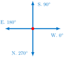
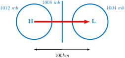
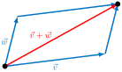
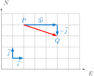

How can vectors be used to model wind? How do wind barbs compare to mathematical vectors?
How can the pressure gradient force be represented by a vector?
Air flow in the atmosphere has both a speed and direction. Meteorological maps (such as surface maps) often illustrate winds using a representation called a wind barb. Wind barbs have flags in the direction the wind is coming from; the barbs describe the speed of the wind in knots. See Figure 4.1.1.
A wind barb illustrating a 35-knot, \(0^{\circ}\) wind (i.e. from the north).
Figure4.1.1.A wind barb illustrating a 35-knot, \(0^{\circ}\) wind (i.e. from the north).
Mathematically, we represent quantities having both a speed and a direction using a displacement vector. A wind arrow (an example of a displacement vector) is an arrow pointing in the direction the wind is blowing towards.
Figure4.1.2.A wind arrow.
Definition4.1.3.
A displacement vector from one point to another is an arrow with its tail at the first point and its tip at the second. The magnitude (or length) of the displacement vector is the distance between the points and is represented by the length of the arrow. The direction of the displacement vector is the direction of the arrow.
Checkpoint4.1.4.Magnitude of a Vector.
Determine the magnitude of the displacement vector \(\vec{v}\) shown in Figure 4.1.5. Figure4.1.5.Vector \(\vec{v}\) for Checkpoint 4.1.4.
Answer.
The magnitude, or length, of vector \(\vec{v}\) is \(\|\vec{v}\| = \sqrt{4^2 + (-3)^2} = \sqrt{25} = 5\text{.}\)
Displacement vectors which point in the same direction and have the same magnitude are considered to be the same, even if they do not coincide.
A vector is used to represent a quantity (like velocity, force, or wind) having both magnitude and direction. In comparison, a quantity specified only by a number, but no direction, such as wind speed or temperature is called a scalar.
Checkpoint4.1.6.Vector or Scalar?
Classify each of the following quantities as a vector or a scalar.
Wind Speed
Wind Velocity
Gravitational Force
Relative Humidity
Temperature
Temperature Gradient
Advection
Coriolis Force
Pressure Gradient Force (PGF)
Answer.
Wind Speed (scalar)
Wind Velocity (vector)
Gravitational Force (vector)
Relative Humidity (scalar)
Temperature (scalar)
Temperature Gradient (vector)
Advection (scalar)
Coriolis Force (vector)
Pressure Gradient Force (PGF) (vector)
By convention, we speak of winds in terms of the direction they are coming from. So if we say "a south wind", that is a wind coming from the south. The wind barb would have flags on the bottom (south), and the wind arrow would be pointed up (north). The way winds are reported in the raw observations (e.g. METARs) is for a north wind to be \(0^{\circ}\text{,}\) an east wind to be \(90^{\circ}\text{,}\) a south wind to be \(180^{\circ}\text{,}\) a west wind to be \(270^{\circ}\text{,}\) etc. See Figure 4.1.7.
Figure4.1.7.Raw wind observations.
Example4.1.8.METARs Code Wind Barbs.
Below is a METAR for the Saint Cloud, MN airport showing a 35-knot wind from \(240^{\circ}\text{.}\) A wind barb representing this wind is shown in Figure 4.1.9. KSTC 260053Z 24035KT 10SM CLR M10/M14 A2994 RMK AO2 SLP173 T11001139
Figure4.1.9.A 35-knot wind from \(240^{\circ}\text{.}\)
Checkpoint4.1.10.Wind Barb from a METAR.
Draw a wind barb representing the wind in Phoenix, AZ given in the METAR data. KPHX 260051Z 19015KT 10SM FEW100 23/M06 A2982 RMK AO2 SLP087 T02281056
Answer.
The wind being described is from \(190^{\circ}\) at 15 knots. This is a SSW wind. See Figure 4.1.11.
Figure4.1.11.A 15-knot wind from \(190^{\circ}\text{.}\)
Once we start thinking of wind as a mathematical vector, we will want to use the mathematical convention (see Figure 4.1.12) for the direction.

Figure4.1.12.Mathematical convention for direction.
A west wind will produce a vector pointing along the \(x\)-axis and a mathematical direction of \(\phi_{polar}=0^{\circ}\text{,}\) a north wind will produce a vector pointing towards the negative \(y\)-axis and a mathematical direction of \(\phi_{polar}=270^{\circ}\text{,}\) and so on.
Checkpoint4.1.13.Converting a Meteorological Direction.
Convert the meteorological direction of \(\phi_{met}=40^{\circ}\) to a mathematical wind direction \(\phi_{polar}\text{.}\)
Answer.
\(\phi_{polar} = 230^{\circ}\)Figure4.1.14.\(\phi_{met}=40^{\circ}\) is equivalent to \(\phi_{polar}=230^{\circ}\text{.}\)
Checkpoint4.1.15.Wind Barbs and Mathematical Vectors.
The wind barb given in Figure 4.1.16 can be thought of as a mathematical vector \(\vec{v}\text{.}\) What is the mathematical angle \(\phi_{polar}\) for this vector \(\vec{v}\text{?}\) What is the magnitude of this vector? Figure4.1.16.Wind barb for Checkpoint 4.1.15
Answer.
Since \(\phi_{met}\) makes an angle of \(40^{\circ}\) with the positive \(y\)-axis pointing north, the mathematical angle is \(\phi_{polar}=270^{\circ}+40^{\circ}=310^{\circ}\text{;}\) the magnitude of this vector is 35 knots.
Figure4.1.17.\(\phi_{met}=320^{\circ}\) is equivalent to \(\phi_{polar}=310^{\circ}\text{.}\)
Checkpoint4.1.18.Wind Barb Conversion.
Much like Fahrenheit to Celsius conversion, derive a formula (in degrees) that converts a meteorological wind direction \(\phi_{met}\) to a mathematical direction \(\phi_{polar}\) (and vice-versa). Be sure to consider how to handle an angle less than zero.
Answer.
\(\phi_{polar} = 270^{\circ} - \phi_{met}\) where \(\phi_{polar}\) is the mathematical wind direction, and \(\phi_{met}\) is the meteorological wind direction. If this value is less than zero, we add 360.
Pressure Gradient Force.
The speed and direction of the wind is mainly governed by three forces; the pressure gradient force (PGF) , the Coriolis Force and friction. The PGF is the force produced by differences in barometric pressure between two locations and is responsible for the flow of air from an area of high pressure to an area of low pressure. The PGF can be represented by a vector since it has both magnitude and direction.
The direction of the PGF is from the center of high pressure to the center of low pressure (see Figure 4.1.19).
The magnitude of the PGF, \(F_{PG}\text{,}\) can be calculated by \(\frac{F_{PG}}{mass} = -\frac{1}{\rho} \cdot \frac{\Delta p}{\Delta {\rm{distance}}}\) where \(m\) represents mass in kg, \(\rho\) represents air density (in kg/m\(^3\)), and \(\Delta p\) represents the change in pressure (in mb).
The units for the magnitude can be understood by conversion to mks-units: If pressure is typically reported in millibars (mb), we can convert that to Pascals (Pa) since 1 mb = 100 Pa. We can then convert Pascals to Newtons per square meter. We see that 1 Pa = 1 kg/(\(m \cdot s^2\)). Air density \(\rho\) can be measured in units of kg/m\(^3\text{.}\) So, the units for the magnitude of \(F_{PG}/\)mass are \(-\frac{1}{kg/m^3} \cdot \frac{kg/(m\cdot s^2)}{m} = \frac{m}{s^2}\) leaving units of \(F_{PG}\) to be \(\frac{kg \cdot m}{s^2}\text{,}\) or Newtons as expected for a force.

Figure4.1.19.Having both magnitude and direction, the pressure gradient force can be represented by a vector. Shown here is the pressure gradient vector for Checkpoint 4.1.20.
Checkpoint4.1.20.Calculating PGF.
Figure 4.1.19 is a simplified weather map showing isobars. Assuming air density of 1 \(kg/m^3\text{,}\) determine the magnitude of the pressure gradient vector shown. Be sure to pay particularly close attention to units.
Answer.
First, we convert the pressure values into mks-units. We see that 1012 \(mb\) = 101,200 \(Pa\) = 101,200 \(\frac{kg}{m \cdot s^2}\) and 1004 \(mb\) = 100,400 \(Pa\) = 100,400 \(\frac{kg}{m \cdot s^2}\text{.}\) Then, we have
So, for every 1 \(kg\) of mass, we have \(F_{PG} = -8.0 \times 10^{-3} \ kg \cdot m / s^2\text{.}\) This is 0.008 Newtons.
Vector Arithmetic.
Think of \(\vec{v}\) as representing the velocity given to a paper airplane and \(\vec{w}\) as the velocity of the wind. Then \(\vec{v} + \vec{w}\) represents the sum of these two forces (called a resultant ). See Figure 4.1.22.
Definition4.1.21.Vector Addition.
The sum, \(\vec{v} + \vec{w}\text{,}\) of two vectors \(\vec{v}\) and \(\vec{w}\) is the combined displacement resulting from first applying \(\vec{v}\) and then \(\vec{w}\text{.}\)

Figure4.1.22.Vector addition. \(\vec{v}+\vec{w}\) forms the diagonal of a parallelogram.
If \(\vec{v}\) represents a displacement vector, the vector \(2\vec{v}\) represents a displacement of twice the magnitude in the same direction as \(\vec{v}\text{.}\) Likewise, the vector \(0.5\vec{v}\) represents a displacement of half the magnitude in the same direction and \(-\vec{v}\) represents a displacement of the same magnitude but in the opposite direction. See Figure 4.1.23.
Figure4.1.23.Scalar Multiplication.
Example4.1.24.Geostrophic Wind.
The observed wind \(\vec{v}\) is the sum of the geostrophic wind \(\vec{v}_g\) and the ageostrophic wind \(\vec{v}_{ag}\) . That is,
For the observed wind \(\vec{v}\) and geostrophic wind \(\vec{v}_g\) given in Figure 4.1.25, a vector representing the ageostrophic wind \(\vec{v}_{ag}\) is shown. The observed wind \(\vec{v}\) is found via the "tip to tail" method of vector addition - we place the tail of \(\vec{v}_{ag}\) on the tip of the vector \(\vec{v}_g\) and draw an arrow from the tail of \(\vec{v}_g\) to the tip of \(\vec{v}_{ag}\) as shown Figure 4.1.25. Important note: Normally, ageostrophic wind is much smaller (relatively speaking) than the geostrophic wind. Figure4.1.25.Observed, geostrophic, and ageostrophic wind vectors for Example 4.1.24.
Checkpoint4.1.26.Vector Arithmetic in 2D.
Determine a displacement vector \({\vec{a}} - {\vec{2b}}\) for vectors \(\vec{a}\) and \(\vec{b}\) shown in Figure 4.1.27. Figure4.1.27.Vectors used in Checkpoint 4.1.26.
Answer.
By placing two copies of \(-\vec{b}\) at the end of \(\vec{a}\text{,}\) the resultant \(\vec{a}-2\vec{b}\) can be found by connecting the tail of \(\vec{a}\) to the tip of the second \(-\vec{b}\text{.}\) (see Figure 4.1.22).
Add vectors \(\vec{u}\text{,}\)\(\vec{v}\text{,}\) and \(\vec{w}\) as shown in Figure 4.1.30. Figure4.1.30.Vectors \(\vec{u}\text{,}\)\(\vec{v}\text{,}\) and \(\vec{w}\) for Checkpoint 4.1.29.
Answer.
Since \(\vec{v}\) is a displacement vector, it can be moved to make the addition of these vectors geometrically as easy as connecting the tail of \(\vec{u}\) to the tip of \(\vec{w}\text{.}\)
Figure4.1.31.The sum \(\vec{u} +\vec{v} + \vec{w}\) for Checkpoint 4.1.29.
Vector Resolution.
Suppose a wind is blowing from the NW (generally speaking) and that we are interested in the strength of the westerly component and the (relative) strength of the northerly component. Using components of the wind vector allows us to specify each of these.
In Figure 4.1.32, the displacement vector from \(P\) to \(Q\) is \(3\vec{i}-\vec{j}\text{.}\) Here \(\vec{i}\) is a unit vector pointing east, \(\vec{j}\) is a unit vector pointing north, and \(3\vec{i}\) and \(-\vec{j}\) are the components of the vector.

Figure4.1.32.Resolving the displacement vector from \(P\) to \(Q\) as \(3\vec{i}-\vec{j}\text{.}\)
In a similar fashion, we can resolve any displacement vector \(\vec{v}\) in space by writing it in the form
The vectors \(\vec{i}\text{,}\)\(\vec{j}\text{,}\) and \(\vec{k}\) are unit vectors pointing in the direction of the positive \(x\)-axis, the positive \(y\)-axis, and positive \(z\)-axis respectively (see Figure 4.1.33. We call \(v_1 \vec{i}\text{,}\)\(v_2 \vec{j}\text{,}\) and \(v_3 \vec{k}\) the components of \(\vec{v}\text{.}\)
Figure4.1.33.Unit basis vectors \(\vec{i}\text{,}\)\(\vec{j}\text{,}\) and \(\vec{k}\text{.}\)
Example4.1.34.Resolving Geostrophic Wind.
A resolution of the vectors representing both the geostrophic wind \(\vec{v}_g\) and ageostrophic wind \(\vec{v}_{ag}\) given in Example 4.1.24 is \(\vec{v}_g = 2\vec{i} + 3\vec{j}\) and \(\vec{v}_{ag} = 2\vec{i} - \vec{j}\text{.}\) The observed wind \(\vec{v}\) has resolution \(\vec{v}=4\vec{i}+2\vec{j} = (2+2)\vec{i} + (3-1)\vec{j} = (2\vec{i}+3\vec{j}) + (2\vec{i} - \vec{j}) = \vec{v}_g + \vec{v}_{ag}\text{.}\)
Checkpoint4.1.35.Resolving a 3D Vector.
Suppose that \(\vec{v}\) points from the point \(P = (3, -1, 0)\) to the point \(Q = (0, 2, 4)\text{.}\) Resolve \(\vec{v}\) into components.
Figure4.1.36.Resolve \(\vec{v}\) into components.
Answer.
\(\vec{v} = (0-3)\vec{i} +(2-(-1))\vec{j} +(4-0)\vec{k} = -3\vec{i} +3\vec{j} +4\vec{k}\) as illustrated in Figure 4.1.37.
The horizontal wind vector \(\vec{v}_H\) can be represented in multiple ways. We describe two ways of representing this vector.
Component representation.\(\vec{v}_H\) can be represented in terms of perpendicular velocity components. For this representation, vectors \(\vec{i}\) and \(\vec{j}\) represent unit vectors in directions East and North respectively. We then write \(\vec{v}_H = u\vec{i} + v\vec{j}\text{.}\) Here \(u\) is the zonal velocity, the magnitude of the horizontal wind towards East. Scalar \(v\) is the meridional velocity, the magnitude of the horizontal wind towards North.
Wind speed and direction representation. The wind speed is simply the magnitude of \(\vec{v}_H\) being specified. That is, \(\|\vec{v}_H\|\) is prescribed. Two opposite conventions are commonly used to describe wind direction.
\(\phi_{vect}\) is the wind vector azimuth, i.e. the direction towards which the wind is blowing. \(\phi_{vect}\) increases clockwise from North when viewed from above. Terms such as northward, eastward, etc. imply wind vector azimuths.
\(\phi_{met}\) is the meteorological wind direction, i.e. the direction from which the wind is blowing. \(\phi_{met}\) also increases clockwise from North when viewed from above. Terms such as northerly, easterly, etc. imply meteorological wind directions.
The polar angle \(\phi_{polar}\) is the standard angle used in mathematics to measure the angle that \(\vec{v}_H\) makes with the positive \(x\)-axis.
Representing the horizontal wind vector \(\vec{v}_H\text{.}\)
Figure4.1.38.Representing the horizontal wind vector \(\vec{v}_H\text{.}\) Here the horizontal wind \(\vec{v}_H\) is coming from an angle of \(\phi_{met}\) and has azimuth \(\phi_{vect}\text{.}\)
Checkpoint4.1.39.The Horizontal Wind Vector.
If \(\vec{v}_H = -(2 \ km/h)\vec{i} + (2 \ km/h)\vec{j}\) is the component representation of the horizontal wind, what is the wind speed? What is the wind vector azimuth \(\phi_{vect}\text{?}\) What is the meteorlogical wind direction \(\phi_{met}\text{?}\)
Consider a northwest (southward and eastward) wind at 5 km/h. What is \(\phi_{vect}\text{?}\) What is \(\phi_{met}\text{?}\) What is the component representation for \(\vec{v}_H\text{?}\)
The change of horizontal wind speed and/or direction with height, called vertical wind shear, is a requirement for thunderstorm formation. The vertical wind shear across a layer of air is the vector difference between the winds at the top of the layer and winds at the bottom, divided by layer thickness \(\Delta z\text{.}\)
Suppose, for example, the wind at an altitude of \(z_1 = 3\) km is given by \(\vec{v}_1 = 5\vec{i}-3\vec{j}\) (in units of m/s) and the wind at altitude \(z_2 = 2\) km is \(\vec{v}_2 = \vec{i} + 2\vec{j}\) (also in units of m/s) as shown in Figure 4.1.41. Then, the shear vector is given by
The direction (but not the magnitude!) of the shear vector is the same as the red vector \(\Delta z \cdot \vec{v}_s\) shown in Figure 4.1.41. The units of vertical wind shear in this example are \(1/s\text{.}\)
Figure4.1.41.Vertical wind shear is proportional to the difference of the wind vectors.
The vertical wind shear \(\vec{v}_s\) between the surface and a height of \(z=6\) km is a standard tool in storm prediction. When the vertical distance between layers is fixed (as it is here at 6 km), just the difference of the wind \(\vec{v}_2\) at the upper layer \(z=6\) km and the wind \(\vec{v}_1\) at the surface called the bulk shear is used. The bulk shear is the wind difference over a layer calculated by vector subtraction. A tool that illustrates and calculates bulk shear between two layers can be found here 57 
Suppose that the surface wind \(\vec{v}_1\) is known to be 10 knots at \(250^{\circ}\) and the wind \(\vec{v}_2\) at 6 km is known to be 40 knots at \(300^{\circ}\) as illustrated in Figure 4.1.43. Determine the 6-km bulk wind shear \(\vec{v}_s = \vec{v}_2-\vec{v}_1\) by giving both its meteorological direction \(\phi_{met}\) and its magnitude. Then, sketch \(\vec{v}_s\) on Figure 4.1.43.
means that \(\|\vec{v}_s\| \approx 34.4\) knots. The meteorological direction of \(\vec{v}_s\) is \(\phi_{met} \approx 313^{\circ}\text{.}\) One way to find this angle is using vector resolution:
We can then evaluate \(\phi_{polar} = \arctan\left(\frac{-23.4}{25.2}\right) \approx -43^{\circ}\) (or \(317^{\circ}\)). This gives a meteorological angle of \(\phi_{met} \approx 270-317(+360) = 313^{\circ}\text{.}\)Figure4.1.44.Bulk wind shear at 6 km is the difference of two vectors.
ExercisesExercises
1.The Position Vector.
A position vector is one that has its tail at the origin.
2.Adding Vectors in Component Form.
3.Draw the Sum of Vectors.
4.Combining Vectors.
5.Vector Length.
6.Net Force.
7.Resolve a Vector.
Resolve the vector given in Figure 4.1.5. That is, write \(\vec{v} = a\vec{i} + b\vec{j}\) for some \(a\) and \(b\text{.}\)
Resolve \(-2\vec{v}\) if \(\vec{v}\) is the vector given in Figure 4.1.5.
Resolve the horizontal wind vector \(\vec{v}_H\) shown in Figure 4.1.45 as a wind barb. That is, describe this wind in the form \(a\vec{j} + b\vec{j}\) where \(a\) and \(b\) are in units of knots. Figure4.1.45.Wind barb for Exercise 4.1.8.
9.Converting Between \(\phi_{polar}\) and \(\phi_{vect}\).
We have seen that the relationship between a meteorological angle \(\phi_{met}\) and a mathematical angle \(\phi_{polar}\) is given by the equation \(\phi_{polar} = 270^{\circ}-\phi_{met}\text{.}\) Determine the relationship between a mathematical angle \(\phi_{polar}\) and the wind azimuth \(\phi_{vect}\) as illustrated in Figure 4.1.38.
Answer.
\(\phi_{polar} = 90^{\circ} - \phi_{vect}\) where \(360^{\circ}\) can be added to make the angle positive if desired.
10.Directions and Vectors.
Suppose that north is the direction of the positive \(y\)-axis and east is the direction of the positive \(x\)-axis.
Describe a mathematical vector \(\vec{v}=a\vec{i}+b\vec{j}\) representing a Southeast wind. That is, determine values of \(a\) and \(b\) giving the resolution of \(\vec{v}\text{.}\)
Give a vector parallel, but not equal to \(\vec{v}\text{.}\)
Give a vector \(\vec{w}\) pointing in the opposite direction of \(\vec{v}\text{.}\) This vector should represent a Northwest wind.
Give a unit vector \(\vec{u}\) representing a Southeast wind.
How many vectors can you find in each case above?
Answer.
\(\vec{v} = -\vec{i} +\vec{j}\) (infinitely-many such vectors exist)
Answers vary; for example, \(\vec{v} = -2\vec{i} +2\vec{j}\) (infinitely-many such vectors exist)
\(\vec{w} = \vec{i} -\vec{j}\) (infinitely-many such vectors exist)
\(\displaystyle \vec{u} = \frac{1}{\sqrt{2}}(-\vec{i} +\vec{j})\) (exactly one such vector exists)
11.Storm Motion Vectors.
When a thunderstorm already exists, its motion can be tracked on radar or satellite (which gives a vector based on its actual speed and direction of movement). One can determine the storm motion vector by marking a point on the radar display then going forward in time to the next radar scan and measuring the distance to that point. The speed is calculated based on radar time and distance. The vector is commonly reported via the azimuth angle and the speed in knots. For example, Figure 4.1.46 shows radar being used to generate a storm motion vector with azimuth of \(248^{\circ}\) and a speed of 47 knots.
Figure4.1.47.The storm motion vector \(\vec{v}_{storm}\) for Exercise 4.1.11.
Resolve the vector \(\vec{v}_{storm}\) into components. That is, write \(\vec{v}_{storm} = a\vec{i} + b\vec{j}\) where \(a\) and \(b\) are measured in knots.
Answer.
First, notice that \(\phi_{polar} = 202^{\circ}\text{.}\) Then,
Resolve the vector \(\vec{v}_{storm}\) described in Figure 4.1.48 into components using units of km/hr. That is, write \(\vec{v}_{storm} = a\vec{i} + b\vec{j}\) where \(a\) and \(b\) are measured in units of kilometers per hour.
Given in Figure 4.1.49 are vectors representing the surface wind (\(\vec{v}_{\rm{sfc}}\)) and the wind at 5 km (\(\vec{v}_{5 {\rm{km}}}\)). Figure4.1.49.Winds for Exercise 4.1.13.
The mean wind is defined to be the average of the vectors \(\vec{v}_{\rm{sfc}}\) and \(\vec{v}_{5 {\rm{km}}}\text{.}\) That is,
Draw and label the mean wind vector \(\vec{v}_{\rm{mean}}\) on Figure 4.1.49.
Resolve vectors \(\vec{v}_{\rm{sfc}}\) and \(\vec{v}_{5 {\rm{km}}}\) into components. Then, use the resolutions to write the mean wind \(\vec{v}_{\rm{mean}}\) as \(u\vec{i} + v\vec{j}\) for some constants \(u\) and \(v\text{.}\)
In a supercell thunderstorm, there can be propagation due to the rotating updraft (called updraft-shear propagation). The resultant storm motion vector \(\vec{v}_{\rm{storm}}\) is the vector sum of the mean wind vector (\(\vec{v}_{\rm{mean}}\)) and the propagation due to the rotating updraft (\(\vec{v}_{usp}\)). Suppose then that the mean wind vector \(\vec{v}_{\rm{mean}}\) is from the Southwest at \(11.3 \approx 8\sqrt{2}\) knots and that the updraft-shear propagation vector \(\vec{v}_{usp}\) is from the South at 1 knot. Draw and label the three vectors \(\vec{v}_{\rm{mean}}\text{,}\)\(\vec{v}_{usp}\text{,}\) and \(\vec{v}_{\rm{storm}}\) on the diagram below. Then, determine (approximately) the meteorlogical direction \(\phi_{met}\) of the storm motion vector (i.e. the direction from which the storm is moving).
Note that \(\vec{v}_{\rm{mean}} = 8\vec{i} + 8\vec{j}\) and \(\vec{v}_{usp} = 1\vec{j}\text{.}\) This makes \(\vec{v}_{\rm{storm}} = \vec{v}_{\rm{mean}} + \vec{v}_{usp} = 8\vec{i} + 9\vec{j}\text{.}\) The meteorlogical direction will then be given by \(\phi_{met} = 270^{\circ}-\arctan(8/9) \approx 228.4^{\circ}\text{.}\)Figure4.1.52.\(\vec{v}_{storm}\) for Exercise 4.1.13.
14.More Mean Wind Vectors.
Table 4.1.53 gives wind measurements at various pressure levels at 12Z on March 5, 2023 for Minneapolis, MN. A rain/snow event was nearing.
Table4.1.53.A vertical wind profile for KMSP at 12Z 05 Mar 2023.
Pressure (mb)
\(\phi_{met}\) (degrees)
wind speed (knots)
\(u\) (knots)
\(v\) (knots)
\(925\)
\(110\)
\(8\)
\(850\)
\(125\)
\(3\)
\(700\)
\(255\)
\(18\)
\(500\)
\(265\)
\(56\)
Forecasters are interested in the mean wind of the sounding because it affects how fast storms move. For each level of the atmosphere, we can write the wind vector as \(\vec{v}=u\vec{i}+v\vec{j}\text{.}\) Determine the appropriate values of \(u\) and \(v\) (in knots) in Table 4.1.53. Then, calculate the mean wind vector \(\vec{v}_{mean}\) and mean wind speed from the given sounding data.
Answer.
The components of the wind vectors at the given pressures are shown in Table 4.1.54.
Table4.1.54.A vertical wind profile for KMSP at 12Z 05 Mar 2023.
Pressure (mb)
\(\phi_{met}\) (degrees)
wind speed (knots)
\(u\) (knots)
\(v\) (knots)
\(925\)
\(110\)
\(8\)
\(-7.5\)
\(2.7\)
\(850\)
\(125\)
\(3\)
\(-1.7\)
\(2.5\)
\(700\)
\(255\)
\(18\)
\(17.4\)
\(4.7\)
\(500\)
\(265\)
\(56\)
\(55.8\)
\(4.9\)
The mean wind is then found to be \(\left(\frac{-7.5-1.7+17.4+55.8}{4}\right)\vec{i} + \left(\frac{2.7+2.5+4.7+4.9}{4}\right)\vec{j}\) or \((16 \ {\rm{knots}})\vec{i} + (3.7 \ {\rm{knots}})\vec{j}\text{.}\) This give a mean wind speed of \(\sqrt{16^2+3.7^2} \approx 16.4\) knots.
15.Storm-relative Winds.
Because tornadoes translate with their parent thunderstorms, the winds that influence supercell and tornado rotation are the environmental wind vectors relative to a coordinate system that moves with the thunderstorm. Such winds are called storm-relative winds. One way to think about this is as the wind felt by the storm. An analogy is driving a car 50 miles per hour into a 20 mile per hour wind. The wind sensed by the car is a 70 mile per hour wind.
First, we find the storm motion vector (see Exercise 4.1.11). Next, to find storm-relative winds, we take the vector difference between the actual wind vectors (at various heights in the atmosphere) and the storm-motion vector.
Suppose the vertical wind profile is given by Table 4.1.55.
Table4.1.55.A vertical wind profile.
\(z\) (km)
\(\phi_{met}\) (degrees)
\(v\) (m/s)
\(0\)
\(110\)
\(6\)
\(1\)
\(150\)
\(10\)
\(2\)
\(180\)
\(15\)
\(3\)
\(190\)
\(17\)
\(4\)
\(250\)
\(25\)
\(5\)
\(270\)
\(30\)
\(6\)
\(310\)
\(40\)
Suppose also that the storm motion vector \(\vec{v}_{storm}\) has azimuth of \(\phi_{vect} = 45\) degrees (from SW) and the speed is 12 m/s. Determine, geometrically, the storm-relative winds. The storm-relative wind vector \(\vec{v}_{sr}\) for \(z=0 \ km\) is shown in Figure 4.1.56.
Figure4.1.56.The storm-relative wind (dotted, in red) at \(z=0\) km for Exercise 4.1.15.